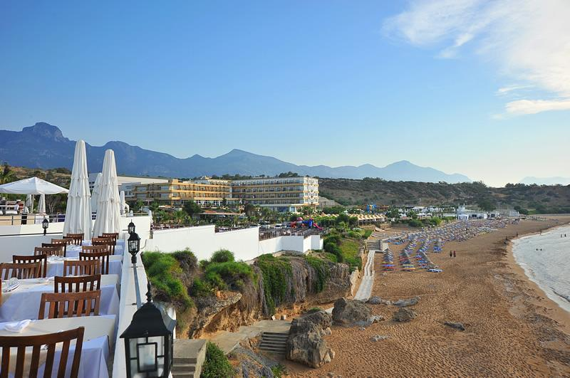
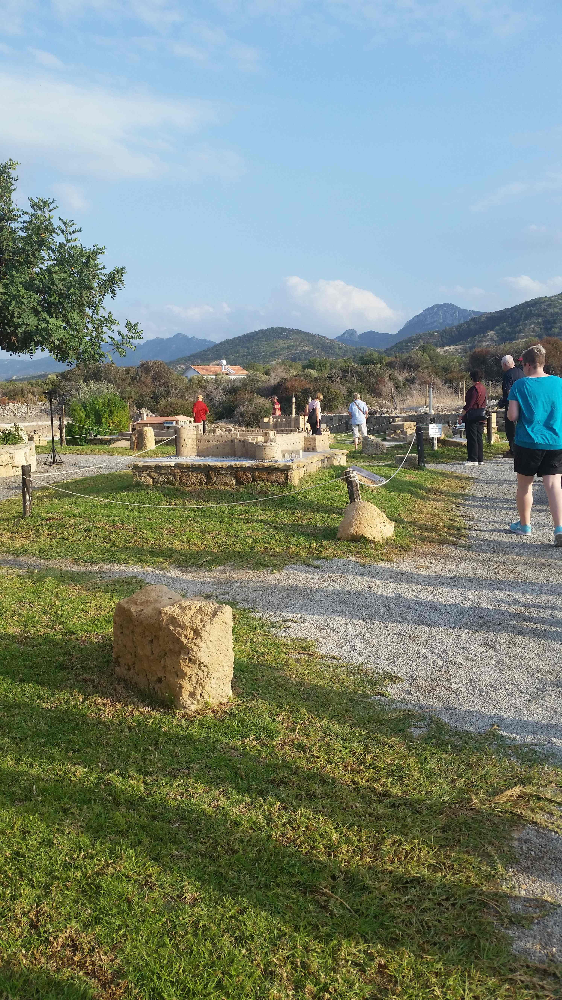
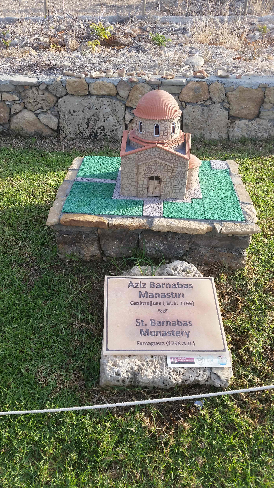
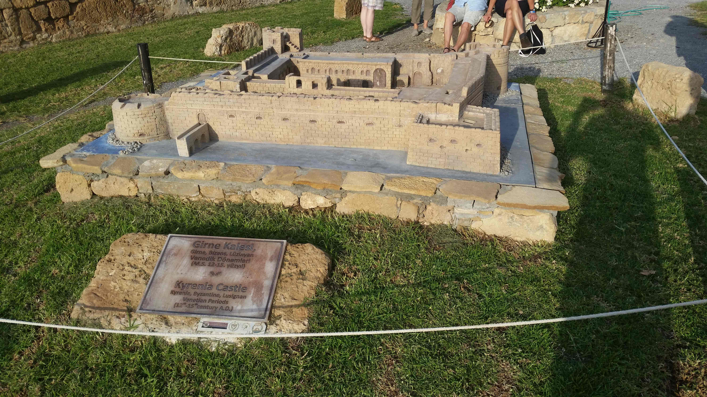

Urlaub in Nord-Zypern, 7.11.-14.11.2016

Hotel Acapulco
Burg Hilarion
 Ein im 9./10. Jahrhundert auf dem Berg errichtetes Kloster war nach dem Eremit St. Hilarion, einem Einsiedler aus dem 6. Jahrhundert, der seine letzten Lebensjahre in einer Höhle im Pentadaktylos verbrachte, benannt. Um 1100 wurde es wahrscheinlich in die Festung integriert. Die heute als Ruine vorhandene Kirche ist dem byzantinischen Kloster zuzurechnen und stammt etwa aus dem 10./11. Jahrhundert. Im Auftrag von Richard Löwenherz ([1157-1199, Sohn der 26-fachen Urgroßmutter von Wolfgang Singer], Ritter des 3. Kreuzzuges und König von England. Heinrich VI., Sohn von Friedrich Barbarossa lies ihn im Jahr 1193 im Trifels einsperren. Die Freilassung kostete die englische Krone 23 Tonnen Silber.) belagerte Guido von Lusignan 1191 die als uneinnehmbar angesehene Burg, um sie danach auf Anweisung des Statthalters Isaak Komemnos an die Franken zu übergeben. Die Tochter Isaaks wurde daraufhin von Guido von Lusignan auf der Burg gefangengehalten.
St. Hilarion wurde dreißig Jahre später in die Auseinandersetzungen mit dem deutschen Kaiser Friedrich II. hineingezogen: Johann von Ibelin, der Vormund des minderjährigen fränkisch-zyprischen Königs Henri I., ließ die Burg ausbauen. Da er feindliche Akte durch Kaiser Friedrich II. befürchtete, brachte er 1228 seine Familie in die Burg. Friedrich erreichte, gestützt auf sein Kreuzfahrerheer, die Übergabe der Burg, doch nach Beendigung des Kreuzzuges belagerte Johann von Ibelin die Burg, die nach dem Ausgehen der Nahrungsvorräte kapitulierte.
Nach 1232 bauten die Lusignans die Burg zu ihrer Sommerresidenz aus und sie erhielt den Namen „Dieu d´Amour“ – abgeleitet vom griechischen „Didymoi“ (Zwillinge) – bezugnehmend auf die beiden Gipfel der Oberburg. An strategischen Punkten errichtete man neue Türme, die sich durch die Verwendung von größeren Quadern, insbesondere an den Ecken, auszeichnen.
Die Burg spielte auch bei der genuesischen Invasion Zyperns 1373 mit der Belagerung von Kyrenia durch die Genuesen eine wichtige Rolle, Peter I. verteidigte die Burg. Nach dem Tod von Peter I. 1369 kam dessen Sohn Peter II. an die Macht, dieser wurde jedoch vom Adel nicht anerkannt. Dessen Onkel Johannes von Antiochia sollte nun König werden. Eleonore von Aragon, die Witwe Peter I. bekämpfte mit ihrem Gefolge Johannes und zwang ihn damit zum Rückzug in die Burg St. Hilarion. Dort stürzte er angeblich aus Angst vor Verrat 300 seiner bulgarischen Leibwachen vom Felsen in den Tod, er selbst wurde 1374 auf Veranlassung Eleonores ermordet.
Um 1391 wurde die Festung ein letztes Mal ausgebaut, wie viele andere Burgen Zyperns aber Anfang des 16. Jahrhunderts von den Venezianern geschleift.
Ein im 9./10. Jahrhundert auf dem Berg errichtetes Kloster war nach dem Eremit St. Hilarion, einem Einsiedler aus dem 6. Jahrhundert, der seine letzten Lebensjahre in einer Höhle im Pentadaktylos verbrachte, benannt. Um 1100 wurde es wahrscheinlich in die Festung integriert. Die heute als Ruine vorhandene Kirche ist dem byzantinischen Kloster zuzurechnen und stammt etwa aus dem 10./11. Jahrhundert. Im Auftrag von Richard Löwenherz ([1157-1199, Sohn der 26-fachen Urgroßmutter von Wolfgang Singer], Ritter des 3. Kreuzzuges und König von England. Heinrich VI., Sohn von Friedrich Barbarossa lies ihn im Jahr 1193 im Trifels einsperren. Die Freilassung kostete die englische Krone 23 Tonnen Silber.) belagerte Guido von Lusignan 1191 die als uneinnehmbar angesehene Burg, um sie danach auf Anweisung des Statthalters Isaak Komemnos an die Franken zu übergeben. Die Tochter Isaaks wurde daraufhin von Guido von Lusignan auf der Burg gefangengehalten.
St. Hilarion wurde dreißig Jahre später in die Auseinandersetzungen mit dem deutschen Kaiser Friedrich II. hineingezogen: Johann von Ibelin, der Vormund des minderjährigen fränkisch-zyprischen Königs Henri I., ließ die Burg ausbauen. Da er feindliche Akte durch Kaiser Friedrich II. befürchtete, brachte er 1228 seine Familie in die Burg. Friedrich erreichte, gestützt auf sein Kreuzfahrerheer, die Übergabe der Burg, doch nach Beendigung des Kreuzzuges belagerte Johann von Ibelin die Burg, die nach dem Ausgehen der Nahrungsvorräte kapitulierte.
Nach 1232 bauten die Lusignans die Burg zu ihrer Sommerresidenz aus und sie erhielt den Namen „Dieu d´Amour“ – abgeleitet vom griechischen „Didymoi“ (Zwillinge) – bezugnehmend auf die beiden Gipfel der Oberburg. An strategischen Punkten errichtete man neue Türme, die sich durch die Verwendung von größeren Quadern, insbesondere an den Ecken, auszeichnen.
Die Burg spielte auch bei der genuesischen Invasion Zyperns 1373 mit der Belagerung von Kyrenia durch die Genuesen eine wichtige Rolle, Peter I. verteidigte die Burg. Nach dem Tod von Peter I. 1369 kam dessen Sohn Peter II. an die Macht, dieser wurde jedoch vom Adel nicht anerkannt. Dessen Onkel Johannes von Antiochia sollte nun König werden. Eleonore von Aragon, die Witwe Peter I. bekämpfte mit ihrem Gefolge Johannes und zwang ihn damit zum Rückzug in die Burg St. Hilarion. Dort stürzte er angeblich aus Angst vor Verrat 300 seiner bulgarischen Leibwachen vom Felsen in den Tod, er selbst wurde 1374 auf Veranlassung Eleonores ermordet.
Um 1391 wurde die Festung ein letztes Mal ausgebaut, wie viele andere Burgen Zyperns aber Anfang des 16. Jahrhunderts von den Venezianern geschleift.
Staudamm Gecitköy
Nach zwanzig Jahren Planung und drei Jahren Bauzeit ist es endlich soweit – eine Pipeline bringt von nun an frisches Trinkwasser von der türkischen Küste nach Nordzypern. Die Pipeline mit dem Namen Bari Suyu (zu deutsch: Friedenswasser) ist 80 Kilometer lang und hat umgerechnet fast 500 Millionen Euro gekostet. Eine teure Investition also, die sich für Zypern jedoch lohnen soll – denn die Insel wird regelmäßig von Dürreperioden heimgesucht und ist daher auf Frischwasser von außerhalb angewiesen. Kein Wunder also, dass die Idee einer Pipeline schon lange in der Luft liegt: Schon 1995 entwickelte ein türkischer Ingenieur die ersten Pläne für das Projekt. Bau war mit Schwierigkeiten verbunden Dass es mit der Fertigstellung bis heute gedauert hat, lag an einigen Hindernissen: Das Meer zwischen den beiden Ländern ist tief und der Boden uneben. Daher entschied man sich letztlich für eine schwimmende Pipeline, die sich in knapp 300 Metern unter dem Meeresspiegel befindet und mit Stahlseilen gehalten wird. Die 75 Millionen Kubikmeter Wasser, die so jährlich nach Zypern transportiert werden, landen in einem neuen Stausee in der Nähe der kleinen Ortschaft Gecitköy. Knapp die Hälfte des ankommenden Wassers soll als Trinkwasser genutzt werden, der Rest zur Bewässerung von landwirtschaftlichen Flächen. Fraglich ist noch, ob die Pipeline für die Wiedervereinigung Zyperns positiv oder hinderlich ist – wird Nordzypern dadurch noch mehr an die Türkei gebunden oder kann das Wasser beiden Inselteilen nützen und sie dadurch zusammen bringen?

Hafen von Girne (Kyrenia)


Die Karawanserei Büyük Han befindet sich im türkisch besetzten Norden Nikosias (dort Lefkoşa genannt). Sie wurde im Jahre 1572, kurz nach der Eroberung der Insel durch die Osmanen, erbaut und wird damit allgemein als ältestes türkisches Bauwerk der Insel angesehen. Karawansereien dienten damals vor allem als Herbergen für Reisende. Mit ihren dicken Mauern waren die Gebäude sicher vor Räubern, sodass man hier keine Angs um Vieh und Handelsware haben musste. Der Büyük Han (Han ist das türkische Wort für Karawanserei) ist zweistöckig aufgebaut, wie es damals üblich war. Im Erdgeschoss waren die Stelle für die Tiere und kleine Läden untergebracht, oben befanden sich die Schlafgemächer der Reisenden. Der große Innenhof diente als Handelsplatz für zahlreiche Waren von nah und fern. Heute ist der vollständig renovierte Büyük Han ein populäres Ziel für Besucher des nördlichen Teils der zyprischen Hauptstadt.

Die Sophienkathedrale wurde zwischen 1209 und 1326, vor allem unter Erzbischof Eustorge de Montaigu (1217-1251) errichtet und gilt als Meisterwerk des gotischen Kirchenbaus, vergleichbar den großen Kathedralen Frankreichs. Auf die Initiative des Bischofs Giovanni del Conte (1319-1332) gehen einige bauliche Veränderungen, vor allem aber die Gestaltung des Innenraums zurück. Dazu holte er italienische Künstler in die Stadt.[1] Geweiht wurde die Kirche am 5. November 1326. Das Gebäude war bis 1489 die Krönungskirche der Könige Zyperns. Anschließend beherrschte Venedig bis 1571 die Insel. Die Osmanen wandelten die Kathedrale in eine Moschee um, die unvollendet gebliebenen Westtürme wurden als Minarette vollendet. Die sakrale Ausstattung, z.B. die Kirchenfenster, ging dabei verloren. Fortan war das Gebäude die städtische Hauptmoschee. Das Gebäude wurde während der Erdbeben 1491, 1547 und 1735 erheblich beschädigt.
Die Abtei Bellapais wurde um 1198 von aus Jerusalem vor Saladin geflüchteten Augustiner-Chorherren gegründet. König Hugo I. aus dem Haus Lusignan beschenkte das Kloster mit Ländereien. Die Abtei nahm nach 1206 die Gebräuche der Prämonstratenser-Chorherren an, in dieser Zeit entstand auch die Klosterkirche unter König Hugo III. (1267–1284). Im 14. Jh. entstanden die restlichen Gebäude. Der Abt wurde mit einigen Rechten ausgestattet, wie der Infulierung, dem Tragen der Bischofsmitra bei Messen oder dem Recht, Schwert und goldene Sporen außerhalb des Klosters zu tragen. Das Kloster erwarb in der Folgezeit großen Reichtum, im 16. Jahrhundert setzte jedoch ein allgemeiner Niedergang der Klosterdisziplin ein. Die eingeleiteten Sanktionen gegen dieses Treiben blieben durch den Osmaneneinfall und die Vertreibung der lateinischen Christen aus. 1571 endete damit die Prämonstratenserabtei, die Gebäude fielen an die orthodoxe Kirche und dienten teilweise als Steinbruch für die Bauten der Umgebung, besonders Kirche und Refektorium blieben aber erhalten. Ein Waldbrand vernichtete 1995 die Baumbestände der Umgebung, die seither nur langsam nachwachsen.
Die ältesten Reste der Hafenfestung von Kyrenia stammen aus dem 7. Jahrhundert. Im 10. Jahrhundert wurde die Festung von den Byzantinern und zu Beginn des 12. Jahrhunderts von den Kreuzfahrern erweitert. Im Jahr 1373 wurde sie von den Genuesen fast vollständig zerstört. Die Venezianer bauten die Festung im Konflikt mit den Osmanen weiter aus und gaben ihr ihre heutige Gestalt. Die Briten benutzten die Burg als Gefängnis, bevor sie ab 1960 zur Touristenattraktion mit mehreren Museen, darunter das Schiffswrackmuseum, umgestaltet wurde.
 Rizokarpaso (griechisch Ριζοκάρπασο) oder Dipkarpaz ist eine Stadt im Norden der Türkischen Republik Nordzypern mit etwa 5.500 Einwohnern. Sie liegt auf der Halbinsel Karpas im äußersten Nordosten Zyperns.
Vor 1974 war die Stadt fast ausschließlich von Zyperngriechen bewohnt, heute ist Rizokarpaso eine der wenigen Enklaven in der Türkischen Republik Nordzypern, in der noch Zyperngriechen leben. Die etwa 250 Zyperngriechen werden auch heute noch von Truppen der United Nations Peacekeeping Force in Cyprus (UNFICYP) mit Lebensmitteln versorgt. Zahlreiche türkische Familien haben sich neu angesiedelt. Die zyperngriechische Minderheit unterhält in Rizokarpaso/Dipkarpaz seit einigen Jahren wieder eine kleine Schule.
Im Annan-Plan wurde Rizokarpaso/Dipkarpaz ausdrücklich als einer derjenigen Orte genannt, zu denen eine unbeschränkte Rückkehr der zyperngriechischen Bevölkerung ermöglicht werden sollte, gleichwohl die Gegend unter zyperntürkischer Verwaltung bleiben sollte.
Rizokarpaso (griechisch Ριζοκάρπασο) oder Dipkarpaz ist eine Stadt im Norden der Türkischen Republik Nordzypern mit etwa 5.500 Einwohnern. Sie liegt auf der Halbinsel Karpas im äußersten Nordosten Zyperns.
Vor 1974 war die Stadt fast ausschließlich von Zyperngriechen bewohnt, heute ist Rizokarpaso eine der wenigen Enklaven in der Türkischen Republik Nordzypern, in der noch Zyperngriechen leben. Die etwa 250 Zyperngriechen werden auch heute noch von Truppen der United Nations Peacekeeping Force in Cyprus (UNFICYP) mit Lebensmitteln versorgt. Zahlreiche türkische Familien haben sich neu angesiedelt. Die zyperngriechische Minderheit unterhält in Rizokarpaso/Dipkarpaz seit einigen Jahren wieder eine kleine Schule.
Im Annan-Plan wurde Rizokarpaso/Dipkarpaz ausdrücklich als einer derjenigen Orte genannt, zu denen eine unbeschränkte Rückkehr der zyperngriechischen Bevölkerung ermöglicht werden sollte, gleichwohl die Gegend unter zyperntürkischer Verwaltung bleiben sollte.
Miniaturpark

Miniaturpark
 Miniaturpark
Miniaturpark